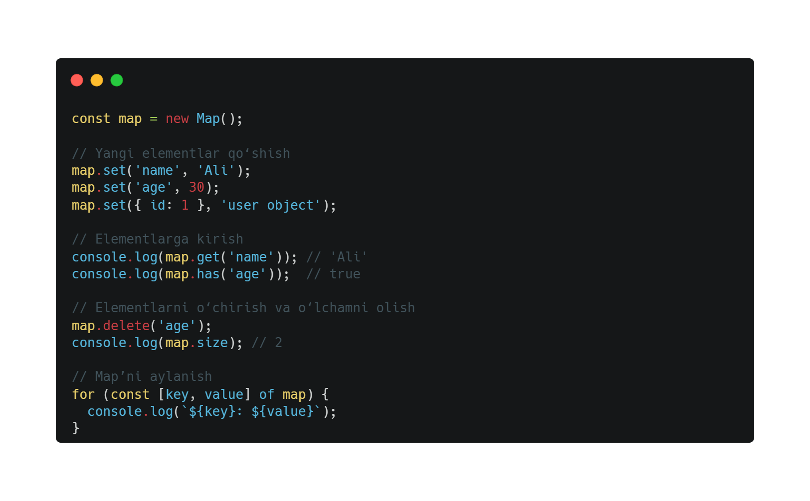
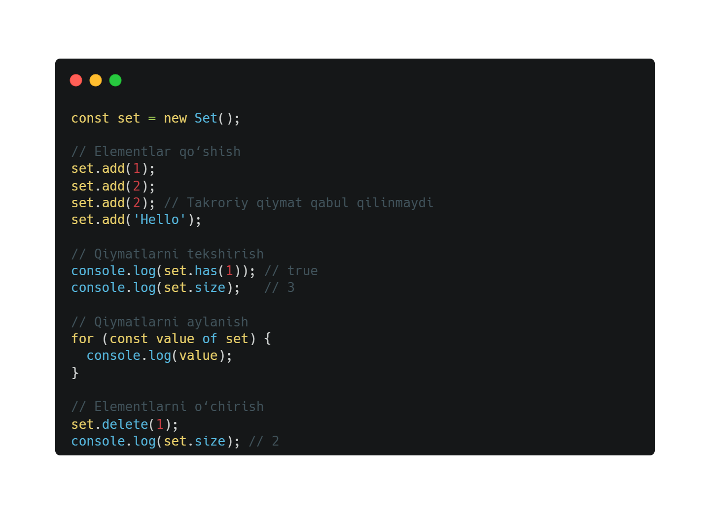

JavaScript - Map va Set
JavaScript’dagi Map va Set - bu ma’lumotlarni saqlash uchun ishlatiladigan zamonaviy ma’lumotlar tuzilmalari bo‘lib, ular Object va Array kabi klassik tuzilmalarga qaraganda ko‘proq moslashuvchanlik va qulaylikni taqdim etadi.
Map: Kalit-Qiymat To'plami
Map - har qanday turdagi kalitlar bilan ishlay oladigan kalit-qiymat juftlarini saqlaydi.
Mapning Xususiyatlari:
- 1. Har qanday turdagi kalitlar: Oddiy obyektlar faqat string yoki symbol turidagi kalitlarni qo‘llab-quvvatlasa, Map har qanday turdagi (masalan, obyekt, funksiya, array) kalitlardan foydalanishi mumkin.
- 2. Qo‘shish tartibi: Map’da qo‘shilgan elementlar tartibi saqlanadi.
- 3. O‘rnatilgan metodlar: Elementlarni qo‘shish, o‘chirish, yoki ularga kirishish uchun qulay metodlar mavjud.
Mapning Metodlari:
- 1. set(key, value) — Kalit-qiymat qo‘shadi yoki mavjud kalitning qiymatini yangilaydi.
- 2. get(key) — Berilgan kalitga mos qiymatni qaytaradi.
- 3. has(key) — Kalit mavjudligini tekshiradi (true/false).
- 4. delete(key) — Berilgan kalit-qiymat juftligini o‘chiradi.
- 5. clear() — Barcha elementlarni o‘chiradi.
- 6. size — Map’dagi elementlar sonini qaytaradi.

Set:
Set - qiymatlarni tartibsiz to‘plamini saqlaydi, takrorlanadigan qiymatlar qabul qilinmaydi.
Setning Xususiyatlari
- 1. Noyob qiymatlar: Set bir xil qiymatni faqat bir marta saqlaydi.
- 2. Har qanday turdagi qiymatlar: String, number, object, array va boshqalar.
- 3. Metodlar orqali boshqarish: Qo‘shish, o‘chirish, va mavjudligini tekshirish.
Setning Metodlari
- 1. add(value) — Yangi qiymat qo‘shadi.
- 2. has(value) — Qiymat mavjudligini tekshiradi (true/false).
- 3. delete(value) — Berilgan qiymatni o‘chiradi.
- 4. clear() — Barcha qiymatlarni o‘chiradi.
- 5. size — Setdagi elementlar sonini qaytaradi.
